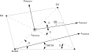

Quad4 - Quadrilateral element with mixed integration (pyfe3d.quad4)#
The module has three classes: Quad4Data, with the sizes of the
sparse arrays that one element fills; Quad4Probe, with the buffers
in element coordinates that one or more elements share; and Quad4,
the element. The update_* methods of Quad4 write the element
contributions in sparse row, column and value arrays, from the positions
given by its init_k_* attributes, or add them to a global internal force
vector.
The Quad4 is the recommended quadrilateral plane stress finite
element.
Another option is the Quad4R with full reduced
integration, more efficient, but with an hourglass control that creates
artificial stiffness to compensate the reduced integration.
The Quad4 element has 6 degrees-of-freedom (DOF): \(u\), \(v\), \(w\),
\(r_x\), \(r_y\), \(r_z\). All DOF are interpolated bi-linearly between the nodes.
The element matrices combine membrane, bending, membrane-bending coupling and
transverse shear terms with a stiffness for the drilling rotation \(r_z\),
whose model is selected with the drilling_model attribute of
Quad4: the default 0 is physics-based, any other value gives
the fictitious penalty of MSC Nastran and Autodesk Nastran controlled by the
K6ROT attribute. The quadrature of the membrane terms depends on the
drilling model, and the quadrature of the transverse shear terms on whether
the thickness h of the pyfe3d.shellprop.ShellProp is smaller
than the square root of the element area.
The transverse shear stiffnesses \(A_{44}\), \(A_{45}\) and \(A_{55}\) are read
from the pyfe3d.shellprop.ShellProp object with the shear correction
already applied, see pyfe3d.shellprop.ShellProp.calc_transverse_shear_stiffness(),
and no shear correction factor is applied by the element. When a material
direction is defined, they are brought to the element coordinate system with
pyfe3d.shellprop.ShellProp.calc_Ats_element().
Notes#
The element follows the first-order shear deformation theory (FSDT). The displacements at a distance \(z\) from the reference surface are \(u + z r_y\), \(v - z r_x\) and \(w\), which gives, in the element coordinate system, the membrane strains, the curvatures and the transverse shear strains
and the strain energy
with \(\boldsymbol{\epsilon} = \{\epsilon_{xx}, \epsilon_{yy}, \gamma_{xy}\}^\top\),
\(\boldsymbol{\kappa} = \{\kappa_{xx}, \kappa_{yy}, \kappa_{xy}\}^\top\),
\(\boldsymbol{\gamma} = \{\gamma_{yz}, \gamma_{xz}\}^\top\), \(\boldsymbol{A}\), \(\boldsymbol{B}\) and \(\boldsymbol{D}\) the
laminate stiffness matrices and \(\boldsymbol{A}_s\) the matrix of \(A_{44}\), \(A_{45}\) and
\(A_{55}\), all in the element coordinate system, and \(U_{r_z}\) the drilling
term described below. These are the rows of Quad4Probe.update_BL().
All DOF are interpolated bi-linearly between the nodes, such that any of the
DOF gradients can be constant over the element when the element is
rectangular.
Integration scheme
The stiffness for the degrees of freedom \(w\), \(r_x\) and \(r_y\) is based on the paper of Hughes et al. [1], whose rotations \(\theta_1\) and \(\theta_2\) enter the transverse shear strains as \(w_{,x} - \theta_1\) and \(w_{,y} - \theta_2\), their Eq. (7), such that \(\theta_1 = -r_y\) and \(\theta_2 = r_x\).
Hughes et al. (1977) proposed the following integration scheme:
For thin and moderately thick plates, when \(h/\ell < 1\), where \(\ell\) is the element characteristic length, here calculated as the square root of the element area \(\ell = \sqrt{\text{area}}\)
– two-by-two quadrature for the bending energy terms
– one-point quadrature for the transverse shear energy terms
For very thick plates, when \(h/\ell >= 1\), the “modified one-point shear” element of the paper (pp. 1541-1542)
– two-by-two quadrature for the bending energy terms
– two-by-two quadrature for the transverse shear terms that are products of the gradients of \(w\), the \((\partial w/\partial x)^2\) and \((\partial w/\partial y)^2\) contributions of the paper and, for a laminate, the \(\partial w/\partial x \, \partial w/\partial y\) term of \(A_{45}\)
– one-point quadrature for the remaining transverse shear terms
The membrane stiffness terms, which are not specified in the paper of Hughes et al. (1977), are integrated with a three-by-three quadrature when the default drilling model is active and with a two-by-two quadrature otherwise, for the reason explained under the drilling stiffness below. The bending term always uses two-by-two, so that the drilling model does not change the bending response of the element.
With the one-point quadrature of the transverse shear terms, the element stiffness matrix has two zero-energy modes besides the rigid-body modes, as reported by Hughes et al. [1]: the hourglass mode \(w = (x - x_c)(y - y_c)\) with zero rotations, and the in-plane twist \(w = 0\), \(r_x = x - x_c\), \(r_y = y - y_c\), where \((x_c, y_c)\) is the centroid. Their transverse shear strains vanish at the centroid. The two-by-two quadrature of the gradient terms for \(h/\ell \ge 1\) gives stiffness to the hourglass mode, the “modified one-point shear” element of the paper. The hourglass mode is the one that survives assembly. It is suppressed by any support that constrains \(w\) along a boundary line, but a strip one element wide loaded in torsion, whose twist is the hourglass pattern, is much too flexible, e.g. the twist case of the straight cantilever of MacNeal and Harder [7].
Hughes et al. [1] note that the transverse shear stiffness is of the order
of \((\ell/h)^2\) times the bending stiffness, such that, with a finite word
length, the bending stiffness is lost for very thin elements, and propose to
multiply the transverse shear stiffness by \((h/\ell)^2\) times the square of a
maximum allowed aspect ratio \(\ell/h\), \(10^5/8\) for their plate element in
the single precision of their computer, when this ratio is exceeded. This
correction is not applied. In double precision, the central deflection of a
simply supported square plate under a central point load, with eight by
eight elements, changes by less than \(10^{-5}\) from \(\ell/h = 1.25 \times
10^3\) to \(\ell/h = 1.25 \times 10^5\), see tests/test_quad4_thin_limit.py,
by \(3 \times 10^{-4}\) at \(\ell/h = 1.25 \times 10^6\), and by \(-32\) % at
\(\ell/h = 1.25 \times 10^7\), where the round-off dominates.
Transverse shear stiffness
When a material direction is defined,
pyfe3d.shellprop.ShellProp.calc_Ats_element() re-evaluates the
equilibrium-based stiffness of Rohwer (1988) [6] with the plies rotated to
the element coordinate system, such that the assumed cylindrical bending
states are posed along the element axes.
Drilling stiffness
The FSDT kinematics contains no strain measure associated with \(r_z\), so the
rows and columns of the drilling degree-of-freedom would be empty and a mesh
of coplanar elements would give a singular global stiffness matrix. Two
models are available, selected with the drilling_model attribute.
Physics-based, the default (drilling_model = 0). The in-plane
displacement field is enriched so that the drilling rotations produce
membrane strain energy, following Allman [2], and the independently
interpolated \(r_z\) is tied to the rotation of the membrane field by the
regularised functional of Hughes and Brezzi [3]. The combination for the
quadrilateral is the one of Ibrahimbegovic, Taylor and Wilson [4].
Each edge \(k\), joining nodes \(i\) and \(j\) and of length \(\ell_k\), carries a quadratic normal displacement whose end slopes are identified with the vertex drilling rotations, giving the amplitude
so that the enrichment is not a new degree-of-freedom but the difference of the two drilling rotations already present at the ends of the edge. The in-plane field becomes
with \(\boldsymbol{n}_k\) the unit normal of edge \(k\) and \(\hat{S}_k\) the
hierarchical bubble of that edge, equal to unity at its mid-point and zero
at every corner, which for the quadrilateral are the mid-side functions of
the eight-node serendipity element, see allman_enrichment(). In row form
the enrichment populates the drilling columns of the membrane operator,
giving \(\tilde{\boldsymbol{B}}_m\), whereas the curvature and transverse shear
operators are untouched, because the edge modes act only on the in-plane
translations. The drilling residual becomes
and the contribution to the element stiffness matrix is
The value \(\gamma_{r_z} = A_{66}\) is a modulus and not a user parameter.
Hughes and Brezzi identify the shear modulus \(G\) as the natural
regularisation parameter of the isotropic problem, and the thickness
integration turns \(G\) into \(hG = A_{66}\), which generalises to the \(A_{66}\)
of the laminate extensional stiffness matrix. The gamma_rz attribute
allows a different value to be used, which is only of interest for the
sensitivity study that the literature recommends.
Allman’s enrichment on its own is rank-deficient by one, because the state \(u_i = v_i = 0\) with \({r_z}_i = \omega_0\) makes every amplitude \(a_k\) vanish and therefore produces no membrane strain, although it is not a rigid-body motion. The term above gives that state the energy \(\frac{1}{2}\gamma_{r_z} A_e \omega_0^2\), with \(A_e\) the element area, and restores the rank at the element level. Prescribing the translations does not remove this mode, but in an assembled mesh it is a single global mode, which Allman notes, for his triangle, is very easily suppressed by prescribing any one of the drilling rotations of the model, and often by the displacement boundary conditions themselves ([2], Sec. 5); the term above removes it without such a constraint.
Two quadrature choices matter and both follow Ibrahimbegovic et al. (1990). The membrane term is integrated with three points per direction: the edge modes make \(\tilde{\boldsymbol{B}}_m\) vary linearly, and with two points the alternating pattern of the drilling rotations produces no membrane strain at any of the four points, leaving a zero-energy mode that no value of \(\gamma_{r_z}\) can remove. The constraint term \(\boldsymbol{K}_{C_e}^{r_z}\) is integrated with a single point at the centroid, which is what makes the element insensitive to \(\gamma_{r_z}\): a fully integrated constraint over-constrains \(r_z = \theta_z\) and locks the membrane response as \(\gamma_{r_z}\) grows, whereas with one point the response reaches an asymptote. One point also gives the constraint rank one per element, exactly what is needed to remove the uniform drilling mode.
Unlike the penalty below, the added term is consistent rather than artificial. Stationarity with respect to \(r_z\) gives \(\gamma_{r_z}(r_z - \theta_z) = 0\) pointwise, so the exact solution satisfies \(r_z = \theta_z\) and the term contributes no energy, for any positive \(\gamma_{r_z}\). The nodal moments about the shell normal recovered in the internal force vector are therefore physical, and in-plane moments can be transmitted between shells and beams through the shared drilling degree-of-freedom. Note also that when \(\boldsymbol{B} \neq \boldsymbol{0}\), for an offset reference surface or an unsymmetric laminate, the enriched membrane operator couples \(r_z\) to the curvatures, which is physically correct.
Fictitious penalty (drilling_model = 1), the default before version
0.10.0, following the approach adopted in MSC Nastran and Autodesk Nastran
through their K6ROT parameter. It provides a small artificial stiffness
whose only purpose is to remove the singularity, so the forces associated
with it are spurious and any moment recovered about the shell normal is
meaningless. The penalty energy is defined per element as:
where \(10^{-6}\) is a scaling factor suggested by MSC Nastran’s approach (CQUAD4) to make the artificial drilling stiffness sufficiently small. AUTODESK NASTRAN’s quick reference guide recommends \(K6ROT = 100\) for static analysis. For modal solutions, \(K6ROT = 10^4\) is suggested. MSC NASTRAN’s quick reference guide states that \(K6ROT > 100\) should not be used, thus contradicting AUTODESK NASTRAN. The rotation \(r_z\) represents the drilling degree-of-freedom in element’s coordinates, whereas \(\theta_z\) the in-plane rotation strain, defined as:
The first variation of \(U_{r_z}\) then becomes:
which can be expressed in terms of the shape functions and element degrees-of-freedom (\(u_e\)) as: \(r_z = S^{r_z} u_e\), \(u = S^u u_e\) and \(v = S^v u_e\) as:
or simply as:
with:
which is the same operator as \(\tilde{\boldsymbol{B}}_{r_z}\) above, evaluated on the unenriched field. Being built from that operator and not from an addition on the diagonal terms is what keeps the penalty from stiffening a rigid rotation of the element about its normal, so both models represent all rigid-body motions and all constant-strain states exactly. \(A_{66}\) is assumed constant over the element. This term is integrated with the two-by-two quadrature. The approach herein presented is very similar to the one presented in Eq. 2.20 of Adam et al. [5].
Choosing between them. The physics-based model is the default because it is the one that is correct when the drilling moment is part of the load path, when shells are connected to beams or stiffeners that must transmit in-plane moments, or when the mesh is too coarse for the unenriched membrane response to be trusted. It is markedly more accurate in in-plane bending: on Cook’s skew membrane with a two-by-two mesh it gives 20.8 against the reference 23.9, where the penalty gives 11.8. The penalty remains available for reproducing results obtained before 0.10.0, and it is cheaper, since it leaves the membrane term on the two-by-two quadrature.
References#
Hughes, T. J. R., Taylor, R. L., and Kanoknukulchai, W., A simple and efficient finite element for plate bending, International Journal for Numerical Methods in Engineering, 11(10), 1529-1543, 1977. https://doi.org/10.1002/nme.1620111005
Allman, D. J., A compatible triangular element including vertex rotations for plane elasticity analysis, Computers & Structures, 19(1-2), 1-8, 1984. https://doi.org/10.1016/0045-7949(84)90197-4
Hughes, T. J. R., and Brezzi, F., On drilling degrees of freedom, Computer Methods in Applied Mechanics and Engineering, 72(1), 105-121, 1989. https://doi.org/10.1016/0045-7825(89)90124-2
Ibrahimbegovic, A., Taylor, R. L., and Wilson, E. L., A robust quadrilateral membrane finite element with drilling degrees of freedom, International Journal for Numerical Methods in Engineering, 30(3), 445-457, 1990. https://doi.org/10.1002/nme.1620300305
Adam, F. M., Mohamed, A. E., and Hassaballa, A. E., Degenerated Four Nodes Shell Element with Drilling Degree of Freedom, IOSR Journal of Engineering, 3(8), 10-20, 2013.
Rohwer, K., Improved transverse shear stiffness for layered finite elements, DFVLR-FB 88-32, 1988.
MacNeal, R. H., and Harder, R. L., A proposed standard set of problems to test finite element accuracy, Finite Elements in Analysis and Design, 1(1), 3-20, 1985. https://doi.org/10.1016/0168-874X(85)90003-4
- class pyfe3d.quad4.Quad4#
Four-node quadrilateral shell element with mixed integration
Nodal connectivity for the plate element similar to Nastran’s CQUAD4:
^ y | 4 ________ 3 | | | | --> x | | |_______| 1 2
The element coordinate system is determined identically what is explained in Nastran’s quick reference guide for the CQUAD4 element, as illustrated below.

The constructor stores the probe and sets the identification numbers and the positions
c1, c2, c3, c4to-1, theinit_k_*positions to0, the rotation matrixr11, ..., r33to zero andm11, m12, m21, m22to the identity. Before computing any element matrix, the caller setsc1, c2, c3, c4and theinit_k_*positions, and callsupdate_rotation_matrix()andupdate_probe_xe().- Parameters:
- p
Quad4Probe Probe used by the element, stored in
probe. One probe can be shared by many elements.
- p
- Attributes:
- eid,int
Element identification number.
- pid,int
Property identification number.
- area,double
Element area. Dimension of length squared. Updated by
update_area().- drilling_model,int
Selects how the drilling degree-of-freedom \(r_z\) is given stiffness, see the module documentation. The default
0is the physics-based stiffness, with the drilling enrichment of the in-plane displacement field and a regularisation term whose coefficient is set bygamma_rz. Any other value selects the fictitious penalty of MSC Nastran and Autodesk Nastran, which was the default up to version 0.9.0 and is controlled byK6ROT. Settingelem.drilling_model = 1before callingupdate_KC0()is the way to reproduce results obtained before 0.10.0.Note
The attribute must be set before the element matrices are updated, and the same value must be passed to
Quad4Probe.update_BL()when strains are recovered from the probe.- K6ROT,double
Dimensionless multiplier for the fictitious drilling stiffness, only read when
drilling_modelis not0. It has no effect under the default physics-based model, seegamma_rz. Default100..- gamma_rz,double
Regularisation parameter \(\gamma_{r_z}\) of the physics-based drilling stiffness, only read when
drilling_modelis0. The default is a negative value, which means that \(A_{66}\) of the laminate extensional stiffness matrix is used. Dimension of force per unit length, asA66.- r11, r12, r13, r21, r22, r23, r31, r32, r33double
Entries \(T_{ij}\) of the transformation matrix \(\boldsymbol{T}_{3\times 3}\) from element to global coordinates, whose columns are the element axes.
- m11, m12, m21, m22double
Rotation matrix only for the constitutive relations. Used when a material direction is used instead of the element local coordinates.
- c1, c2, c3, c4int
Position of each node in the global stiffness matrix. The coordinates of a node are read at the positions
c1//2,c2//2,c3//2andc4//2of the coordinate array.- n1, n2, n3, n4int
Node identification number.
- init_k_KC0, init_k_KCNL, init_k_KG, init_k_Mint
Position in the arrays storing the sparse data for the structural matrices.
- init_k_KA_beta, init_k_KA_gamma, init_k_CAint
Position in the arrays storing the sparse data for the aerodynamic matrices based on the Piston theory.
- probe,
Quad4Probeobject Pointer to the probe.
Methods
update_CA(self, long[, long[, double[)Update sparse vectors for piston-theory aerodynamic damping matrix \(\boldsymbol{C}_A\)
update_KA_beta(self, long[, long[, double[)Update sparse vectors for piston-theory aerodynamic matrix \(\boldsymbol{K}_{A_\beta}\)
update_KA_gamma(self, long[, long[, double[)Update sparse vectors for piston-theory aerodynamic matrix \(\boldsymbol{K}_{A_\gamma}\)
update_KC0(self, long[, long[, double[, ...)Update sparse vectors for linear constitutive stiffness matrix KC0
update_KCNL(self, long[, long[, double[, ...)Update sparse vectors for the nonlinear stiffness matrix KCNL
update_KG(self, long[, long[, double[, ...)Update sparse vectors for geometric stiffness matrix KG
update_KG_given_stress(self, double Nxx, ...)Update sparse vectors for geometric stiffness matrix KG
update_M(self, long[, long[, double[, ...)Update sparse vectors for mass matrix M
update_area(self)Update element area
update_fint(self, double[, ShellProp prop, ...)Update the internal force vector
update_probe_finte(self, ShellProp prop, ...)Update the internal force vector of the probe
update_probe_ue(self, double[)Update the local displacement vector of the probe of the element
update_probe_xe(self, double[)Update the 3D coordinates of the probe of the element
update_rotation_matrix(self, double[, ...)Update the rotation matrix of the element
Notes
The default physics-based drilling stiffness,
drilling_model = 0, combines the in-plane enrichment of Allman (1984) [1] with the regularisation of Hughes and Brezzi (1989) [2], in the form given for the quadrilateral by Ibrahimbegovic et al. (1990) [3]. With it the drilling rotation is a kinematic variable that carries strain energy, the recovered nodal moments about the shell normal are physical, and no user parameter is involved, since its regularisation parameter is taken from the laminate stiffness. The fictitious penalty of the other values ofdrilling_modelcorresponds to \(\gamma_{r_z} = K6ROT \cdot 10^{-6} A_{66}\). Both models are described in the Notes ofpyfe3d.quad4.For
K6ROT, AUTODESK NASTRAN’s quick reference guide recommendsK6ROT = 100.for static analysis. For modal solutions,K6ROT=1.e4is suggested. MSC NASTRAN’s quick reference guide states thatK6ROT > 100.should not be used, but this is contradicting AUTODESK NASTRAN.The default
gamma_rz, \(A_{66}\), is the value identified by Hughes and Brezzi (1989) [2]. This is a modulus and not a parameter that needs tuning: the element response has a broad plateau of insensitivity around it, and the attribute is exposed for the sensitivity study that the literature recommends rather than for normal use. Very large values over-constrain \(r_z = \theta_z\), and a zero value leaves the Allman enrichment rank-deficient by one.References
[1]Allman, D. J., A compatible triangular element including vertex rotations for plane elasticity analysis, Computers & Structures, 19(1-2), 1-8, 1984. https://doi.org/10.1016/0045-7949(84)90197-4
[2] (1,2)Hughes, T. J. R., and Brezzi, F., On drilling degrees of freedom, Computer Methods in Applied Mechanics and Engineering, 72(1), 105-121, 1989. https://doi.org/10.1016/0045-7825(89)90124-2
[3]Ibrahimbegovic, A., Taylor, R. L., and Wilson, E. L., A robust quadrilateral membrane finite element with drilling degrees of freedom, International Journal for Numerical Methods in Engineering, 30(3), 445-457, 1990. https://doi.org/10.1002/nme.1620300305
- K6ROT#
K6ROT: ‘double’
- area#
area: ‘double’
- c1#
c1: ‘int’
- c2#
c2: ‘int’
- c3#
c3: ‘int’
- c4#
c4: ‘int’
- drilling_model#
drilling_model: ‘int’
- eid#
eid: ‘int’
- gamma_rz#
gamma_rz: ‘double’
- init_k_CA#
init_k_CA: ‘int’
- init_k_KA_beta#
init_k_KA_beta: ‘int’
- init_k_KA_gamma#
init_k_KA_gamma: ‘int’
- init_k_KC0#
init_k_KC0: ‘int’
- init_k_KCNL#
init_k_KCNL: ‘int’
- init_k_KG#
init_k_KG: ‘int’
- init_k_M#
init_k_M: ‘int’
- m11#
m11: ‘double’
- m12#
m12: ‘double’
- m21#
m21: ‘double’
- m22#
m22: ‘double’
- n1#
n1: ‘int’
- n2#
n2: ‘int’
- n3#
n3: ‘int’
- n4#
n4: ‘int’
- pid#
pid: ‘int’
- probe#
probe: pyfe3d.quad4.Quad4Probe
- r11#
r11: ‘double’
- r12#
r12: ‘double’
- r13#
r13: ‘double’
- r21#
r21: ‘double’
- r22#
r22: ‘double’
- r23#
r23: ‘double’
- r31#
r31: ‘double’
- r32#
r32: ‘double’
- r33#
r33: ‘double’
- update_CA(self, long[: :1] CAr, long[: :1] CAc, double[: :1] CAv) void#
Update sparse vectors for piston-theory aerodynamic damping matrix \(\boldsymbol{C}_A\)
The matrix is integrated over the element with 2 by 2 Gauss-Legendre quadrature, from the coordinates
probe.xeand the rotation matrix, and its values are added toCAvat the positionsinit_k_CAtoinit_k_CA + CA_SPARSE_SIZE - 1; the global row and column indices are always written toCArandCAcat the same positions. Only the translational degrees-of-freedom appear, through their components along the element normal. No aerodynamic coefficient enters the values, which depend only on the geometry, so the caller multiplies the assembled matrix by it. Before this method is called,update_rotation_matrix()andupdate_probe_xe()must have been used.- Parameters:
- CArnp.array
Array to store row positions of sparse values 1-D array of integers (
INT) of size at leastinit_k_CA + CA_SPARSE_SIZE.- CAcnp.array
Array to store column positions of sparse values Same type and size as
CAr.- CAvnp.array
Array to store sparse values 1-D array of
DOUBLE, same size asCAr. The values are added to the existing ones, with dimension of length squared.
Notes
With \(w_n\) the displacement along the element normal, as in
update_KA_beta(), the computed matrix is\[\boldsymbol{C}_A = -\int_A \boldsymbol{S}^\top \boldsymbol{S} dA\]acting on the nodal values of the velocity \(\dot w_n\). With the piston-theory damping coefficient \(\mu\) given by the caller, \(\mu \boldsymbol{C}_A \dot{\boldsymbol{u}}\) is the load of the term \(-\mu \dot{w}_n\) of the pressure law, which enters the damping of the equations of motion as \(-\mu \boldsymbol{C}_A\), positive definite, see the piston theory in the notes of
update_KA_beta().
- update_KA_beta(self, long[: :1] KA_betar, long[: :1] KA_betac, double[: :1] KA_betav) void#
Update sparse vectors for piston-theory aerodynamic matrix \(\boldsymbol{K}_{A_\beta}\)
The matrix is integrated over the element with 2 by 2 Gauss-Legendre quadrature, from the coordinates
probe.xeand the rotation matrix, and its values are added toKA_betavat the positionsinit_k_KA_betatoinit_k_KA_beta + KA_BETA_SPARSE_SIZE - 1; the global row and column indices are always written toKA_betarandKA_betacat the same positions. Only the translational degrees-of-freedom appear, through their components along the element normal. No aerodynamic coefficient enters the values, which depend only on the geometry, so the caller multiplies the assembled matrix by it. Before this method is called,update_rotation_matrix()andupdate_probe_xe()must have been used.- Parameters:
- KA_betarnp.array
Array to store row positions of sparse values 1-D array of integers (
INT) of size at leastinit_k_KA_beta + KA_BETA_SPARSE_SIZE.- KA_betacnp.array
Array to store column positions of sparse values Same type and size as
KA_betar.- KA_betavnp.array
Array to store sparse values 1-D array of
DOUBLE, same size asKA_betar. The values are added to the existing ones, with dimension of length.
Notes
With \(w_n = T_{13} u + T_{23} v + T_{33} w\) the displacement along the element normal, written with the global translations, the computed matrix is
\[\boldsymbol{K}_{A_\beta} = -\int_A \boldsymbol{S}^\top \left( T_{11} \boldsymbol{S}_{,x} + T_{12} \boldsymbol{S}_{,y} \right) dA\]acting on the nodal values of \(w_n\), where \(\boldsymbol{S}\) holds the bilinear shape functions and \(\boldsymbol{S}_{,x}\), \(\boldsymbol{S}_{,y}\) their derivatives along the element axes. The element coordinates are \(x = T_{11} X + T_{21} Y + T_{31} Z\) and \(y = T_{12} X + T_{22} Y + T_{32} Z\), such that \(T_{11} \boldsymbol{S}_{,x} + T_{12} \boldsymbol{S}_{,y}\) is the derivative along the global \(X\) axis, the direction of the flow, projected on the plane of the element.
Piston theory
The matrices of
update_KA_beta(),update_KA_gamma()andupdate_CA()are the matrices of the aerodynamic load along the element normal of a supersonic flow along the global \(X\) axis, flowing towards the positive \(X\). The linear piston theory, with Krumhaar’s correction for a cylinder [1], gives the pressure on the side of the flow \(p = \beta w_{,X} + \mu \dot{w} - \gamma w\), with \(w\) the displacement towards the flow, and hence the load per unit area along the normal\[q = -\beta \, w_{n,X} + \gamma \, w_n - \mu \, \dot{w}_n\]whichever side of the element the flow is on, because \(q\) and \(w_n\) change sign together. The load vector is then \(\boldsymbol{f}_A = \beta \boldsymbol{K}_{A_\beta} \boldsymbol{u} + \gamma \boldsymbol{K}_{A_\gamma} \boldsymbol{u} + \mu \boldsymbol{C}_A \dot{\boldsymbol{u}}\) and the equations of motion are
\[\boldsymbol{M} \ddot{\boldsymbol{u}} - \mu \boldsymbol{C}_A \dot{\boldsymbol{u}} + \left(\boldsymbol{K} - \beta \boldsymbol{K}_{A_\beta} - \gamma \boldsymbol{K}_{A_\gamma}\right) \boldsymbol{u} = \boldsymbol{0}\]The coefficients are given by the caller; with the density \(\rho_{\infty}\), speed \(U\) and Mach number \(M\) of the flow, \(\beta = \rho_{\infty} U^2/\sqrt{M^2 - 1}\), \(\mu = \beta (M^2 - 2)/(U (M^2 - 1))\), and \(\gamma = \beta/(2 R \sqrt{M^2 - 1})\) for the flow over the outer, convex, side of a cylinder of radius \(R\), an outward displacement lowering the pressure, or \(\gamma = 0\) for a flat panel. The positive \(\mu\) damps the motion, and the positive \(\gamma\) reduces the stiffness.
References
[1]Krumhaar, H., “The accuracy of linear piston theory when applied to cylindrical shells”, AIAA Journal, 1(6), 1448-1449, 1963.
- update_KA_gamma(self, long[: :1] KA_gammar, long[: :1] KA_gammac, double[: :1] KA_gammav) void#
Update sparse vectors for piston-theory aerodynamic matrix \(\boldsymbol{K}_{A_\gamma}\)
The matrix is integrated over the element with 2 by 2 Gauss-Legendre quadrature, from the coordinates
probe.xeand the rotation matrix, and its values are added toKA_gammavat the positionsinit_k_KA_gammatoinit_k_KA_gamma + KA_GAMMA_SPARSE_SIZE - 1; the global row and column indices are always written toKA_gammarandKA_gammacat the same positions. Only the translational degrees-of-freedom appear, through their components along the element normal. No aerodynamic coefficient enters the values, which depend only on the geometry, so the caller multiplies the assembled matrix by it. Before this method is called,update_rotation_matrix()andupdate_probe_xe()must have been used.- Parameters:
- KA_gammarnp.array
Array to store row positions of sparse values 1-D array of integers (
INT) of size at leastinit_k_KA_gamma + KA_GAMMA_SPARSE_SIZE.- KA_gammacnp.array
Array to store column positions of sparse values Same type and size as
KA_gammar.- KA_gammavnp.array
Array to store sparse values 1-D array of
DOUBLE, same size asKA_gammar. The values are added to the existing ones, with dimension of length squared.
Notes
With \(w_n\) the displacement along the element normal, as in
update_KA_beta(), the computed matrix is\[\boldsymbol{K}_{A_\gamma} = \int_A \boldsymbol{S}^\top \boldsymbol{S} dA\]acting on the nodal values of \(w_n\). With the piston-theory coefficient \(\gamma\) given by the caller, \(\gamma \boldsymbol{K}_{A_\gamma} \boldsymbol{u}\) is the load of the term \(\gamma w_n\) of the pressure law, which enters the stiffness of the equations of motion as \(-\gamma \boldsymbol{K}_{A_\gamma}\), see the piston theory in the notes of
update_KA_beta().
- update_KC0(self, long[: :1] KC0r, long[: :1] KC0c, double[: :1] KC0v, ShellProp prop, int update_KC0v_only=0) void#
Update sparse vectors for linear constitutive stiffness matrix KC0
The element matrix is computed in element coordinates into the probe attribute
KC0ve, from the coordinatesprobe.xe, theareaand the constitutive matrices ofproprotated withm11, m12, m21, m22. It is rotated to global coordinates and its values are added toKC0vat the positionsinit_k_KC0toinit_k_KC0 + KC0_SPARSE_SIZE - 1. Withupdate_KC0v_only=0the global row and column indices are written toKC0randKC0cat the same positions. Before this method is called,update_rotation_matrix()andupdate_probe_xe()must have been used.- Parameters:
- KC0rnp.array
Array to store row positions of sparse values 1-D array of integers (
INT) of size at leastinit_k_KC0 + KC0_SPARSE_SIZE.- KC0cnp.array
Array to store column positions of sparse values Same type and size as
KC0r.- KC0vnp.array
Array to store sparse values 1-D array of
DOUBLE, same size asKC0r. The values are added to the existing ones. Dimension of force per unit length between translations, of force between a translation and a rotation, and of force times length between rotations.- prop
ShellPropobject Shell property object from where the stiffness and mass attributes are read from.
- update_KC0v_onlyint, optional
The default
0means that the row and column indicesKC0randKC0cshould also be updated. Any other value will only update the stiffness matrix valuesKC0v.
Notes
The element matrix in element coordinates,
KC0ve, is computed by_update_probe_KC0ve(), whose Notes give its terms and quadratures. It is rotated to global coordinates with \(\boldsymbol{K}_g = \boldsymbol{T} \boldsymbol{K}_e \boldsymbol{T}^\top\), where \(\boldsymbol{T}\) is block diagonal, with the matrix \(\boldsymbol{T}_{3\times 3}\) of the entries \(T_{ij}\) stored inr11, ..., r33, whose columns are the element axes, applied to the translations and to the rotations of each node.
- update_KCNL(self, long[: :1] KCNLr, long[: :1] KCNLc, double[: :1] KCNLv, ShellProp prop, int update_KCNLv_only=0) void#
Update sparse vectors for the nonlinear stiffness matrix KCNL
KCNL collects the terms of the tangent stiffness matrix of the geometrically nonlinear analysis with the von Karman membrane strains that are not in KC0 and in KG, evaluated at the displacements of the probe with the quadrature of
update_KG(). The tangent stiffness matrix of the internal forces ofupdate_fint()withnonlinear=1isKC0 + KCNL + KG.Before this function is called, the probe
Quad4Probeattribute of theQuad4object must be updated usingupdate_probe_ue()with the current displacements; andupdate_probe_xe()with the node coordinates.The element matrix is computed in element coordinates into the probe attribute
KCNLve, rotated to global coordinates, and its values are added toKCNLvat the positionsinit_k_KCNLtoinit_k_KCNL + KCNL_SPARSE_SIZE - 1. Withupdate_KCNLv_only=0the global row and column indices are written toKCNLrandKCNLcat the same positions.- Parameters:
- KCNLrnp.array
Array to store row positions of sparse values 1-D array of integers (
INT) of size at leastinit_k_KCNL + KCNL_SPARSE_SIZE.- KCNLcnp.array
Array to store column positions of sparse values Same type and size as
KCNLr.- KCNLvnp.array
Array to store sparse values 1-D array of
DOUBLE, same size asKCNLr. The values are added to the existing ones, with the dimensions given forKC0vinupdate_KC0().- prop
ShellPropobject Shell property object from where the stiffness and mass attributes are read from.
- update_KCNLv_onlyint, optional
The default
0means that the row and column indicesKCNLrandKCNLcshould also be updated. Any other value will only update the stiffness matrix valuesKCNLv.
Notes
Assuming that KCNL = KC0L + KCL0 + KCLL + KGNL, that is \(\boldsymbol{K}_{CNL} + \boldsymbol{K}_{GNL}\), the book’s nonlinear constitutive stiffness matrix \(\boldsymbol{K}_{CNL}\) of the terms of \(\boldsymbol{B}_{NL}\) plus the geometric \(\boldsymbol{K}_{GNL}\), built from the von Karman membrane strains
\[\epsilon_{xx} = u_{,x} + \frac{1}{2} w_{,x}^2, \quad \epsilon_{yy} = v_{,y} + \frac{1}{2} w_{,y}^2, \quad \gamma_{xy} = u_{,y} + v_{,x} + w_{,x} w_{,y}\]whose nonlinear part is \(\boldsymbol{\epsilon}_{NL} = \frac{1}{2} \boldsymbol{B}_{NL} \boldsymbol{u}_e\), with \(\boldsymbol{B}_{NL}\) its variation. With \(\boldsymbol{B}_m\) and \(\boldsymbol{B}_b\) the linear membrane and bending strain-displacement matrices, \(\boldsymbol{G}_x = \partial \boldsymbol{S}^w / \partial x\) and \(\boldsymbol{G}_y = \partial \boldsymbol{S}^w / \partial y\) the gradients of \(w\), and \(\boldsymbol{A}\), \(\boldsymbol{B}\) the laminate matrices:
KC0L = \(\boldsymbol{B}_m^\top \boldsymbol{A} \boldsymbol{B}_{NL} + \boldsymbol{B}_b^\top \boldsymbol{B} \boldsymbol{B}_{NL}\)
KCL0 = KC0L`^top`
KCLL = \(\boldsymbol{B}_{NL}^\top \boldsymbol{A} \boldsymbol{B}_{NL}\)
KGNL = \(N_{NL,xx} \boldsymbol{G}_x^\top \boldsymbol{G}_x + N_{NL,yy} \boldsymbol{G}_y^\top \boldsymbol{G}_y + N_{NL,xy} (\boldsymbol{G}_x^\top \boldsymbol{G}_y + \boldsymbol{G}_y^\top \boldsymbol{G}_x)\), with \(\boldsymbol{N}_{NL} = \{N_{NL,xx}, N_{NL,yy}, N_{NL,xy}\}^\top = \boldsymbol{A} \boldsymbol{\epsilon}_{NL}\)
The first three groups are the constitutive terms coupling the linear and the nonlinear parts of the membrane strain. KGNL is geometric, carrying the stress of the nonlinear membrane strain. It is collected here so that
update_KG()stays homogeneous of degree one in the displacements, which is what a linear buckling analysis needs. With it here,\[\boldsymbol{K}_T = \boldsymbol{K}_{C0} + \boldsymbol{K}_{CNL}(\boldsymbol{u}) + \boldsymbol{K}_{GNL}(\boldsymbol{u}) + \boldsymbol{K}_G(\boldsymbol{u})\]is the exact Jacobian of the internal forces of
update_fint()withnonlinear=1, and a Newton-Raphson iteration built on them converges quadratically. The quadrature ofupdate_KG()is used.The linear part of the internal forces,
KC0*u, keeps the quadratures of KC0, whereas the nonlinear terms of_update_probe_finte_nonlinear(), KCNL and KG use the two-by-two quadrature; each part of the strain energy is differentiated with its own quadrature, so the Jacobian remains exact. The element matrix is computed by_update_probe_KCNLve()and rotated to global coordinates as inupdate_KC0().
- update_KG(self, long[: :1] KGr, long[: :1] KGc, double[: :1] KGv, ShellProp prop) void#
Update sparse vectors for geometric stiffness matrix KG
Two-point Gauss-Legendre quadrature is used.
Before this function is called, the probe
Quad4Probeattribute of theQuad4object must be updated usingupdate_probe_ue()with the correct pre-buckling (fundamental state) displacements; andupdate_probe_xe()with the node coordinates.At each integration point the membrane stress resultants are obtained from the linear membrane strains and curvatures of the probe displacements
ue, including fordrilling_model=0the contribution of the drilling rotations, and from the extensional and extension-bending coupling matrices ofproprotated withm11, m12, m21, m22. Only the translational degrees-of-freedom appear. The values are added toKGvat the positionsinit_k_KGtoinit_k_KG + KG_SPARSE_SIZE - 1, and the global row and column indices are always written toKGrandKGcat the same positions.- Parameters:
- KGrnp.array
Array to store row positions of sparse values 1-D array of integers (
INT) of size at leastinit_k_KG + KG_SPARSE_SIZE.- KGcnp.array
Array to store column positions of sparse values Same type and size as
KGr.- KGvnp.array
Array to store sparse values 1-D array of
DOUBLE, same size asKGr. The values are added to the existing ones, with dimension of force per unit length.- prop
ShellPropobject Shell property object from where the stiffness and mass attributes are read from.
Notes
The two-point quadrature showed more accuracy for linear buckling load predictions. The matrix is
\[\boldsymbol{K}_G = \sum w_{ij} \det J \left( N_{xx} \boldsymbol{G}_x^\top \boldsymbol{G}_x + N_{yy} \boldsymbol{G}_y^\top \boldsymbol{G}_y + N_{xy} (\boldsymbol{G}_x^\top \boldsymbol{G}_y + \boldsymbol{G}_y^\top \boldsymbol{G}_x) \right)\]with \(\boldsymbol{G}_x\) and \(\boldsymbol{G}_y\) the rows of \(w_{,x}\) and \(w_{,y}\) of
_update_probe_BL_G(), \(w\) being the displacement along the element normal, i.e. the combination of the global translations withr13, r23, r33, and \(\{N_{xx}, N_{yy}, N_{xy}\}^\top = \boldsymbol{A} \boldsymbol{\epsilon} + \boldsymbol{B} \boldsymbol{\kappa}\) the stress resultants of the linear strains of the Notes ofpyfe3d.quad4. Fordrilling_model=0the membrane strains include those of the drilling enrichment ofallman_enrichment(), without which KG would not be part of the exact Jacobian of the internal forces, seeupdate_KCNL(). KG is linear in the displacementsue, such thatKC0 + lambda*KGgives the linear buckling problem for the load multiplierlambdaof the pre-buckling state.
- update_KG_given_stress(self, double Nxx, double Nyy, double Nxy, long[: :1] KGr, long[: :1] KGc, double[: :1] KGv) void#
Update sparse vectors for geometric stiffness matrix KG
Note
A constant stress state is assumed within the element, according to the given values of \(N_{xx}, N_{yy}, N_{xy}\).
Two-point Gauss-Legendre quadrature is used.
Before this function is called, the probe
Quad4Probeattribute of theQuad4object must be updated usingupdate_probe_xe()with the node coordinates.Only the translational degrees-of-freedom appear. The values are added to
KGvat the positionsinit_k_KGtoinit_k_KG + KG_SPARSE_SIZE - 1, and the global row and column indices are always written toKGrandKGcat the same positions.update_rotation_matrix()must also have been called before.- Parameters:
- Nxx, Nyy, Nxydouble
Membrane stress resultants in the element coordinate system, force per unit length.
- KGrnp.array
Array to store row positions of sparse values 1-D array of integers (
INT) of size at leastinit_k_KG + KG_SPARSE_SIZE.- KGcnp.array
Array to store column positions of sparse values Same type and size as
KGr.- KGvnp.array
Array to store sparse values 1-D array of
DOUBLE, same size asKGr. The values are added to the existing ones, with dimension of force per unit length.
Notes
The matrix is the one of
update_KG(), with the given constant stress resultantsNxx, Nyy, Nxyinstead of the ones computed from the displacements of the probe. The two-point quadrature showed more accuracy for linear buckling load predictions.
- update_M(self, long[: :1] Mr, long[: :1] Mc, double[: :1] Mv, ShellProp prop, int mtype=0) void#
Update sparse vectors for mass matrix M
Different integration schemes are available by means of the
mtypeparameter.The element matrix is computed from
intrho,intrhozandintrhoz2ofprop, the coordinatesprobe.xeand thearea, rotated to global coordinates, and its values are added toMvat the positions starting atinit_k_M; the global row and column indices are always written toMrandMcat the same positions.mtype=0andmtype=2writeM_SPARSE_SIZEentries andmtype=1writes the first 120 of them. Before this method is called,update_rotation_matrix()andupdate_probe_xe()must have been used.- Parameters:
- Mrnp.array
Array to store row positions of sparse values 1-D array of integers (
INT) of size at leastinit_k_M + M_SPARSE_SIZE.- Mcnp.array
Array to store column positions of sparse values Same type and size as
Mr.- Mvnp.array
Array to store sparse values 1-D array of
DOUBLE, same size asMr. The values are added to the existing ones. Dimension of mass between translations, of mass times length between a translation and a rotation, and of mass times length squared between rotations.- prop
ShellPropobject Shell property object, from which
intrho,intrhozandintrhoz2are read.- mtypeint, optional
0 for consistent mass matrix 1 for lumped mass matrix 2 for reduced integration mass matrix Default
0.
- Raises:
- ValueError
If
mtypeis not 0, 1 or 2.
Notes
The three mass matrices follow from the kinetic energy of Brockman 1987 [1], Eq. (20), and have the form of its Eq. (21). With the displacements \(u + z r_y\), \(v - z r_x\) and \(w\) of the Notes of
pyfe3d.quad4, the kinetic energy integrated through the thickness,\[T = \frac{1}{2} \int_A \left[ intrho (\dot{u}^2 + \dot{v}^2 + \dot{w}^2) + 2\, intrhoz (\dot{u} \dot{r}_y - \dot{v} \dot{r}_x) + intrhoz2 (\dot{r}_x^2 + \dot{r}_y^2) \right] dA\]where
intrho,intrhozandintrhoz2include the offset, gives, for the nodes \(i\) and \(j\), in element coordinates,\[\begin{split}M_{ij} = h_{ij} \begin{bmatrix} intrho & 0 & 0 & 0 & intrhoz & 0 \\ 0 & intrho & 0 & -intrhoz & 0 & 0 \\ 0 & 0 & intrho & 0 & 0 & 0 \\ 0 & -intrhoz & 0 & intrhoz2 & 0 & 0 \\ intrhoz & 0 & 0 & 0 & intrhoz2 & 0 \\ 0 & 0 & 0 & 0 & 0 & 0 \end{bmatrix}, \qquad h_{ij} = \int_A S_i S_j dA\end{split}\]for the DOF \(u, v, w, r_x, r_y, r_z\), the drilling rotation carrying no inertia. The matrix is rotated to global coordinates as in
update_KC0(). The integrals \(h_{ij}\) are computed with:mtype=0: two-point Gauss-Legendre quadrature in each direction;mtype=1: two-point Gauss-Lobatto quadrature in each direction, whose points are the nodes, the lumped mass matrix of Brockman [1], giving \(h_{ii}\) equal to the Jacobian determinant at node \(i\) and \(h_{ij} = 0\) for \(i \neq j\);mtype=2: a single point at the centroid, where every \(S_i = 1/4\), giving \(h_{ij} = A/16\) for all \(i, j\).
For
mtype=0the quadrature is exact. Withmtype=2the element mass is placed at the average of the node positions, which is the centroid of the area only for a parallelogram.Lumped mass matrix
The Gauss-Lobatto rule of
mtype=1is a nodal quadrature. Applied to the whole integrand of \(T\), in which \(S_i\) is 1 at node \(i\) and 0 at the other nodes, it couples no different nodes and gives for node \(i\) the block \(M_{ii}\) above with \(h_{ii}\), the coupling throughintrhozincluded: the matrix is block-diagonal per node and, as Brockman [1] writes, diagonal only whenintrhozis zero. The weights \(h_{ii}\) sum to the area \(A\), so the lumped matrix has the exact mass and the exact first moment of the mass through the thickness,intrhoz\(A\), which places the centre of mass at the offset from the reference surface. In the plane of the element the first moment is exact when \(h_{ii} = \int_A S_i dA\), which holds for a parallelogram, where \(h_{ii} = A/4\), and not for a general quadrilateral, whose Jacobian determinant varies. Of the rotary inertia, the termintrhoz2\(A\) about the axes in the plane of the element is exact, while the part from the distribution ofintrhoover the area, about any axis, is concentrated at the nodes: 3 times the exact value about the centroid of a parallelogram, an error that decreases with the size of the elements.References
[1] (1,2,3)Brockman, R. A., Dynamics of the Bilinear Mindlin Plate Element, International Journal for Numerical Methods in Engineering, 24(12), 2343-2356, 1987. https://doi.org/10.1002/nme.1620241208
- update_area(self) void#
Update element area
The
areaattribute is updated with the area of the quadrilateral given by the element coordinatesprobe.xe, ignoring thezcoordinates. Called byupdate_probe_xe().
- update_fint(self, double[: :1] fint, ShellProp prop, int nonlinear=0) void#
Update the internal force vector
The element internal forces, computed in element coordinates with
update_probe_finte(), are rotated to global coordinates and added tofintat the positions of the nodes,c1,c2,c3andc4. Before this method is called,update_probe_xe()andupdate_probe_ue()must have been used.- Parameters:
- fintnp.array
Array that is updated in place with the internal forces. The internal forces stored in
fintare calculated in global coordinates. Methodupdate_probe_finte()is called to update the parameterfinteof theQuad4Probewith the internal forces in local coordinates. 1-D array of sizeDOF*M, with forces for the translations and moments (force times length) for the rotations.- prop
ShellPropobject Shell property object from where the stiffness and mass attributes are read from.
- nonlinearint, optional
The default
0gives the linear internal forces,KC0*u. Any other value adds the geometrically nonlinear terms of the von Karman strains, whose tangent stiffness matrix isKC0 + KCNL + KG, seeupdate_KCNL().
Notes
The internal forces of each node, forces and moments, are rotated from the element to the global coordinates with the rotation matrix
r11, ..., r33. Withnonlinear,KC0 + KCNL + KGis the exact Jacobian of the assembled internal forces, seeupdate_probe_finte()andupdate_KCNL().
- update_probe_finte(self, ShellProp prop, int nonlinear=0) void#
Update the internal force vector of the probe
The attribute
finteof the objectQuad4Probeis updated, which corresponds to the internal forces in local coordinates. While using this function, mind that the probe can be shared amongst more than one finite element, depending how you defined them, meaning that the probe will always safe the values from the last udpate.The linear internal forces are
KC0vetimesue, the attributeKC0veof the probe being updated first, as inupdate_KC0(). Before this method is called,update_probe_xe()andupdate_probe_ue()must have been used.Note
The
finteattribute of objectQuad4Probeis updated, accessible using.probe.finte.- Parameters:
- prop
ShellPropobject Shell property object from where the stiffness and mass attributes are read from.
- nonlinearint, optional
The default
0gives the linear internal forces,KC0*u. Any other value adds the geometrically nonlinear terms of the von Karman strains, whose tangent stiffness matrix isKC0 + KCNL + KG, seeupdate_KCNL().
- prop
Notes
The internal forces are the gradient of the strain energy of the Notes of
pyfe3d.quad4with respect to the element displacements,finte = KC0ve @ uein the linear case, with the quadratures of_update_probe_KC0ve(). Withnonlinearthe terms of_update_probe_finte_nonlinear()are added, andKC0 + KCNL + KGis the exact Jacobian of the internal forces, seeupdate_KCNL().
- update_probe_ue(self, double[: :1] u) void#
Update the local displacement vector of the probe of the element
The displacements and rotations of the four nodes, read from
uat the positionsc1,c2,c3andc4, are rotated to the element coordinate system with the transpose \(\boldsymbol{T}_{3\times 3}^\top\) of the transformation matrix and written toprobe.ue.update_rotation_matrix()must have been called before.Note
The
ueattribute of objectQuad4Probeis updated, accessible using.probe.ue.- Parameters:
- uarray-like
Array with global displacements, for a total of \(M\) nodes in the model, this array will be arranged as: \(u_1, v_1, w_1, {r_x}_1, {r_y}_1, {r_z}_1, u_2, v_2, w_2, {r_x}_2, {r_y}_2, {r_z}_2, ..., u_M, v_M, w_M, {r_x}_M, {r_y}_M, {r_z}_M\). 1-D array of size
DOF*M, translations with dimension of length and rotations dimensionless.
- update_probe_xe(self, double[: :1] x) void#
Update the 3D coordinates of the probe of the element
The coordinates of the four nodes, read from
xat the positionsc1//2,c2//2,c3//2andc4//2, are rotated to the element coordinate system with the transpose \(\boldsymbol{T}_{3\times 3}^\top\) of the transformation matrix and written toprobe.xe.update_area()is then called, updatingarea.update_rotation_matrix()must have been called before.Note
The
xeattribute of objectQuad4Probeis updated, accessible using.probe.xe.- Parameters:
- xarray-like
Array with global nodal coordinates, for a total of \(M\) nodes in the model, this array will be arranged as: \(x_1, y_1, z_1, x_2, y_2, z_2, ..., x_M, y_M, z_M\). 1-D array of size
3*M, dimension of length.
- update_rotation_matrix(self, double[: :1] x, double xmati=0., double xmatj=0., double xmatk=0.) void#
Update the rotation matrix of the element
Attributes
r11,r12,r13,r21,r22,r23,r31,r32,r33are updated, with the entries \(T_{ij}\) of the transformation matrix \(\boldsymbol{T}_{3\times 3}\) from element to global coordinates, whose columns are the element axes.The element coordinate system is determined, identifying the \(ijk\) components of each axis: \({x_e}_i, {x_e}_j, {x_e}_k\); \({y_e}_i, {y_e}_j, {y_e}_k\); \({z_e}_i, {z_e}_j, {z_e}_k\).
The rotation matrix terms are calculated after solving 9 equations.
The element
zaxis is along the cross product of the vectors from node 4 to node 2 and from node 1 to node 3, and the elementxaxis along the sum of these two vectors. When a material direction is given,m11, m12, m21, m22are updated with the rotation from the material direction projected onto the element to the elementxaxis. When it is the zero vector, the default, or parallel to the element normal,m11, m12, m21, m22are not changed.- Parameters:
- xarray-like
Array with global nodal coordinates, for a total of \(M\) nodes in the model, this array will be arranged as: \(x_1, y_1, z_1, x_2, y_2, z_2, ..., x_M, y_M, z_M\). 1-D array of size
3*M, dimension of length. The coordinates of each node are read from the positionsc1//2,c2//2,c3//2andc4//2.- xmati, xmatj, xmatkdouble, optional
Vector in global coordinates representing the material direction. This vector is projected onto the plate element, thus becoming the material direction. The \(ABD\) matrix defining the constitutive behavior of the element is rotated from the material direction to the element \(x\) axis while calculating the stiffness matrices. Only the direction of the vector is used. Default
0., the zero vector, which leavesm11, m12, m21, m22unchanged.
- class pyfe3d.quad4.Quad4Data#
Used to allocate memory for the sparse matrices.
Each attribute is the number of entries that one
Quad4writes in the row, column and value arrays of the corresponding sparse matrix, starting at the position given by the matchinginit_k_*attribute of the element. Fornelements the arrays needntimes these sizes. The constructor takes no parameters.- Attributes:
- KC0_SPARSE_SIZE,int
KC0_SPARSE_SIZE = 576- KCNL_SPARSE_SIZE,int
KCNL_SPARSE_SIZE = 576- KG_SPARSE_SIZE,int
KG_SPARSE_SIZE = 144- M_SPARSE_SIZE,int
M_SPARSE_SIZE = 480- KA_BETA_SPARSE_SIZE,int
KA_BETA_SPARSE_SIZE = 144- KA_GAMMA_SPARSE_SIZE,int
KA_GAMMA_SPARSE_SIZE = 144- CA_SPARSE_SIZE,int
CA_SPARSE_SIZE = 144
- CA_SPARSE_SIZE#
CA_SPARSE_SIZE: ‘int’
- KA_BETA_SPARSE_SIZE#
KA_BETA_SPARSE_SIZE: ‘int’
- KA_GAMMA_SPARSE_SIZE#
KA_GAMMA_SPARSE_SIZE: ‘int’
- KC0_SPARSE_SIZE#
KC0_SPARSE_SIZE: ‘int’
- KCNL_SPARSE_SIZE#
KCNL_SPARSE_SIZE: ‘int’
- KG_SPARSE_SIZE#
KG_SPARSE_SIZE: ‘int’
- M_SPARSE_SIZE#
M_SPARSE_SIZE: ‘int’
- class pyfe3d.quad4.Quad4Probe#
Probe used for local coordinates, local displacements, local stiffness, local stresses etc…
The idea behind using a probe is to avoid allocating larger memory buffers per finite element. The memory buffers are allocated per probe, and one probe can be shared amongst many finite elements, with the information being updated and retrieved on demand.
Note
The probe can be shared amongst more than one finite element, depending on how you defined them. Mind that the probe will always safe the values from the last udpate.
The constructor takes no parameters and allocates every array filled with zeros.
- Attributes:
- xe,array-like
Array of size
NUM_NODES*DOF//2=12containing the nodal coordinates in the element coordinate system, in the following order \({x_e}_1, {y_e}_1, {z_e}_1, `{x_e}_2, {y_e}_2, {z_e}_2\), \({x_e}_3, {y_e}_3, {z_e}_3\), \({x_e}_4, {y_e}_4, {z_e}_4\). Dimension of length. Updated byQuad4.update_probe_xe().- ue,array-like
Array of size
NUM_NODES*DOF=24containing the element displacements in the following order \({u_e}_1, {v_e}_1, {w_e}_1, {{r_x}_e}_1, {{r_y}_e}_1, {{r_z}_e}_1\), \({u_e}_2, {v_e}_2, {w_e}_2, {{r_x}_e}_2, {{r_y}_e}_2, {{r_z}_e}_2\), \({u_e}_3, {v_e}_3, {w_e}_3, {{r_x}_e}_3, {{r_y}_e}_3, {{r_z}_e}_3\), \({u_e}_4, {v_e}_4, {w_e}_4, {{r_x}_e}_4, {{r_y}_e}_4, {{r_z}_e}_4\). Translations with dimension of length, rotations dimensionless. Updated byQuad4.update_probe_ue().- finte,array-like
Array of size
NUM_NODES*DOF=24containing the element internal forces corresponding to the degrees-of-freedom described byue. Forces, and moments (force times length) for the rotations. Updated byQuad4.update_probe_finte().- KC0ve,array-like
Local stiffness matrix stored as a 1D array of size
(NUM_NODES*DOF)**2. Stored row by row. Updated byQuad4.update_KC0()andQuad4.update_probe_finte().- BLexx, BLeyy, BLgxyarray-like
Arrays of size
NUM_NODES*DOF=24containing the in-plane strain interpolation functions evaluated at a given natural coordinate point \(\xi\), \(\eta\). Their product withuegives the membrane strains, dimensionless.- BLkxx, BLkyy, BLkxyarray-like
Arrays of size
NUM_NODES*DOF=24containing the bending strain interpolation functions evaluated at a given natural coordinate point \(\xi\), \(\eta\). Their product withuegives the curvatures, with dimension of one over length.- BLgyz_grad, BLgyz_rot, BLgxz_grad, BLgxz_rotarray-like
Arrays of size
NUM_NODES*DOF=24containing the transverse shear strain interpolation functions evaluated at a given natural coordinate point \(\xi\), \(\eta\). The sum of the products of a_gradrow and of the_rotrow of the same strain withuegives that transverse shear strain, dimensionless.BLdrillingarray-likeBLdrilling: ‘double[::1]’
- Sw_x, Sw_yarray-like
Arrays of size
NUM_NODES*DOF=24with the rows giving \(w_{,x}\) and \(w_{,y}\), at the last evaluated integration point.Sw_xholds \(\boldsymbol{G}_x = \partial \boldsymbol{S}^w/\partial x\) andSw_yholds \(\boldsymbol{G}_y = \partial \boldsymbol{S}^w/\partial y\), the underscore denoting the partial derivative. Their products withueare dimensionless.KCNLvearray-likeKCNLve: ‘double[::1]’
Methods
update_BL(self, double xi, double eta, ...)Update all components of the interpolation matrix \(\boldsymbol{B}_L\) at a given natural coordinate point \(\xi\), \(\eta\).
- BLdrilling#
BLdrilling: ‘double[::1]’
- BLexx#
BLexx: ‘double[::1]’
- BLeyy#
BLeyy: ‘double[::1]’
- BLgxy#
BLgxy: ‘double[::1]’
- BLgxz_grad#
BLgxz_grad: ‘double[::1]’
- BLgxz_rot#
BLgxz_rot: ‘double[::1]’
- BLgyz_grad#
BLgyz_grad: ‘double[::1]’
- BLgyz_rot#
BLgyz_rot: ‘double[::1]’
- BLkxx#
BLkxx: ‘double[::1]’
- BLkxy#
BLkxy: ‘double[::1]’
- BLkyy#
BLkyy: ‘double[::1]’
- KC0ve#
KC0ve: ‘double[::1]’
- KCNLve#
KCNLve: ‘double[::1]’
- Sw_x#
Sw_x: ‘double[::1]’
- Sw_y#
Sw_y: ‘double[::1]’
- finte#
finte: ‘double[::1]’
- ue#
ue: ‘double[::1]’
- update_BL(self, double xi, double eta, int drilling_model=0) void#
Update all components of the interpolation matrix \(\boldsymbol{B}_L\) at a given natural coordinate point \(\xi\), \(\eta\).
The rows
BLexx,BLeyy,BLgxy,BLkxx,BLkyy,BLkxy,BLgyz_grad,BLgyz_rot,BLgxz_grad,BLgxz_rotandBLdrillingof the probe are computed from its element coordinatesxe, which must have been updated withQuad4.update_probe_xe(). Only the entries that depend onxi,etaandxeare written, the other entries keep their values.Sw_x,Sw_yand the other attributes are not changed.- Parameters:
- xi, etadouble
Natural coordinates of the evaluation point. Dimensionless, from
-1to1over the element.- drilling_modelint, optional
Must match the
drilling_modelattribute of the finite element that the probe is being used with, such that the recovered strains correspond to the displacement field that produced the stiffness matrix. The default0includes the Allman drilling enrichment in the membrane rows and inBLdrilling; any other value gives the unenriched rows used by theK6ROTpenalty model.
Notes
With the bilinear shape functions \(S_i\) and their Cartesian derivatives \(S_{i,x}\), \(S_{i,y}\), the products of the rows with
ueare the strains of the Notes ofpyfe3d.quad4:BLexx,BLeyyandBLgxygive \(\epsilon_{xx} = u_{,x}\), \(\epsilon_{yy} = v_{,y}\) and \(\gamma_{xy} = u_{,y} + v_{,x}\);BLkxx,BLkyyandBLkxygive \(\kappa_{xx} = {r_y}_{,x}\), \(\kappa_{yy} = -{r_x}_{,y}\) and \(\kappa_{xy} = {r_y}_{,y} - {r_x}_{,x}\);BLgxz_gradandBLgxz_rotgive the two parts of \(\gamma_{xz} = w_{,x} + r_y\), andBLgyz_gradandBLgyz_rotthose of \(\gamma_{yz} = w_{,y} - r_x\);BLdrillinggives \(r_z - \theta_z = r_z + \frac{1}{2}u_{,y} - \frac{1}{2}v_{,x}\), the operator \(B_{r_z}\) of the penalty model.With
drilling_model=0the \(r_z\) columns ofBLexx,BLeyyandBLgxyreceive the derivatives of the edge modes ofallman_enrichment(), \(\tilde S^u_{,x}\), \(\tilde S^v_{,y}\) and \(\tilde S^u_{,y} + \tilde S^v_{,x}\), and the \(r_z\) columns ofBLdrillingreceive \(\frac{1}{2}\tilde S^u_{,y} - \frac{1}{2}\tilde S^v_{,x}\), giving the operator \(\tilde{\boldsymbol{B}}_{r_z}\) of the physics-based model.
- xe#
xe: ‘double[::1]’